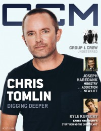

CCM Digital, 15 Oct 2014
| Cover |
|---|
|  |
 Online Exclusively Online Exclusively |
| Writers in this Issue |
| Argyrakis, Andy Aspinwall, Grace S. Conner, Matt Greer, Andrew Kingsbury, Karen Lusk, Caroline |
Chris Tomlin
Cover Feature:- "Digging Deeper: Chris Tomlin Soaks In The Goodness Of His God" by Caroline Lusk
- "Undeterred" by Caroline Lusk
- "Raising A Banner" by Caroline Lusk
- "Home Free: Joseph Habedank Beats Addiction and Rediscovers His First Love" by Caroline Lusk
- "Introducing Kyle Kupecky and a Look at God's "Plans"" by Karen Kingsbury
- The Martins by Andrew Greer
- Selah - You Amaze Us by Andrew Greer
- Group 1 Crew - #Faster/#Stronger by Grace S. Aspinwall
- Desperation Band - Banner by Grace S. Aspinwall
- various artists - Reverence: An Offering by Grace S. Aspinwall
- Mr. Del - Hope Dealer 2 by Matt Conner
- Michelle Williams - Journey to Freedom by Andrew Greer
- 3 Winans Brothers - Foreign Land by Andrew Greer
- NF - NF by Matt Conner
- Stryper - Live at the Whiskey by Andy Argyrakis
- Boiling Point - More by Matt Conner
- Anthony Faulkner - I Trust You EP by Andrew Greer
- Marc Broussard - A Life Worth Living by Andy Argyrakis
- "Baptized Tour, FirstMerit Bank Pavilion at Northeast Island, Chicago, IL" by Andy Argyrakis
- "You Amaze Us" by Caroline Lusk
Relevant Links
For more information about CCM Digital visit .This issue is available exclusively online.
© 2011 CMnexus. Last updated September 2019. Contact: editor -AT- cmnexus -DØT- org About